Sobre o projeto
Desde 2019, o projeto Snapshot tem se dedicado ao monitoramento global, padronizado e de longo prazo de mamíferos terrestres de médio a grande porte, por meio de projetos colaborativos entre grupos de pesquisa, cientistas e entusiastas da ciência e da natureza (ciência cidadã).
Essa rede de colaboração não apenas promove avanços na coleta e disponibilização de dados abertos em larga escala, mas também fortalece e amplia a cooperação entre grupos de pesquisa em nível nacional e internacional.
Atualmente, o projeto está presente em diversos países, incluindo os Estados Unidos, Japão e Europa. Em 2025 foi implementado no Brasil.
Nosso objetivo é estabelecer uma pesquisa de longo prazo para monitorar a biodiversidade de mamíferos terrestres e compreender as transformações nos ecossistemas em um cenário de rápidas mudanças ambientais e climáticas.
Com esta nova rede de colaboração, buscamos potencializar conexões científicas, criando oportunidades para novas parcerias e o desenvolvimento de pesquisas inovadoras em nível nacional e internacional.
Protocolo e inscrição
Inscrição: Cadastre-se por meio desse formulário.
Objetivo: Um estudo em larga escala que fornece avaliações anuais de populações de mamíferos através do uso de armadilhas fotográficas distribuídas por todo o país.
Período: Início da estação seca, com 60 dias de monitoramento. Em cada área de estudo, recomenda-se a instalação de, no mínimo, 16 armadilhas fotográficas ou, alternativamente, 8 armadilhas por 30 dias, com redistribuição subsequente.
Conduta: Cumprir as diretrizes do protocolo. A participação poderá ser recusada em caso de descumprimento.
- Pontos amostrais: Selecionar pontos de forma aleatória, em grade ou transectos, considerando as características da área. Todos os pontos devem estar no mesmo tipo de fitofisionomia (por exemplo, zona urbana, suburbana, rural ou vegetação nativa).
- Instalação: Posicionar as câmeras a, no máximo, 40 cm do solo, mantendo uma distância mínima de 200 m e máxima de 5 km entre elas. Caso haja necessidade de reposicionamento, o novo ponto deve estar, pelo menos, a 200 m do original.
- Equipamento: Utilizar câmeras com ativação rápida (0,5 s) e uso de infravermelho.
- Configuração: Operar no modo foto, capturando de 3 a 5 imagens por ativação, sem intervalos entre elas.
- Iscas: Não utilizar iscas em nenhuma das armadilhas.
Protocolo: Você pode encontrar o protocolo completo aqui.
Projetos participantes
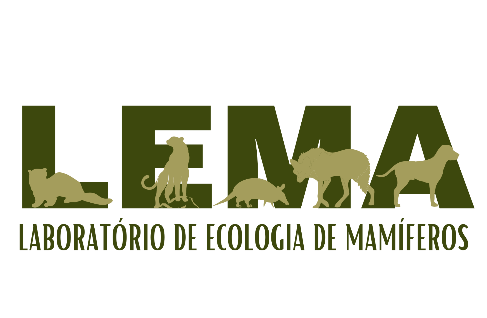
Laboratório de Ecologia de Mamíferos (LEMa)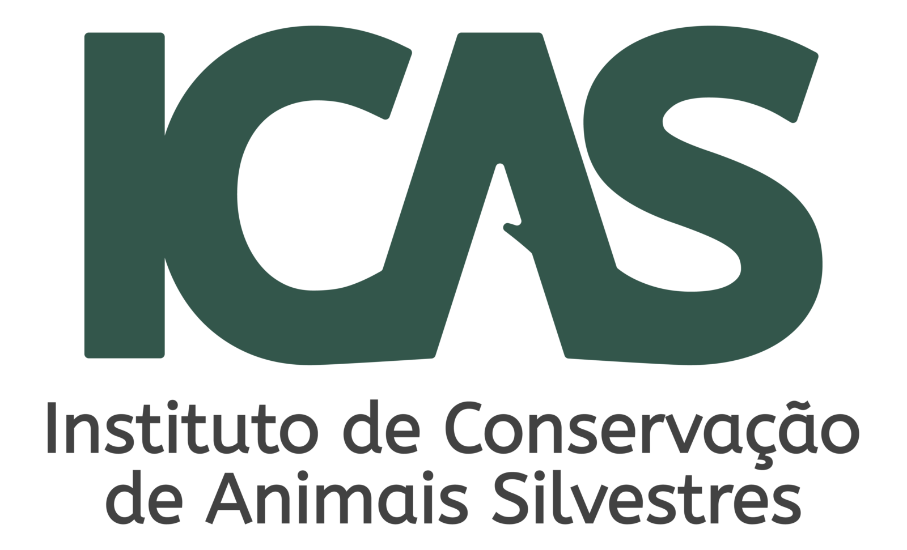
Projeto Tatu-canastra (ICAS)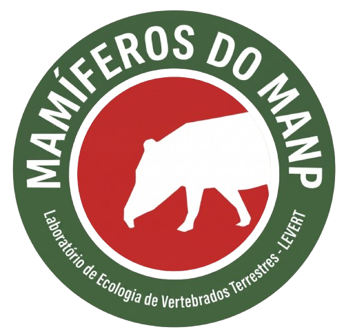
Mamíferos do PELD MANP (Laboratório de Ecologia de Vertebrados da UEL)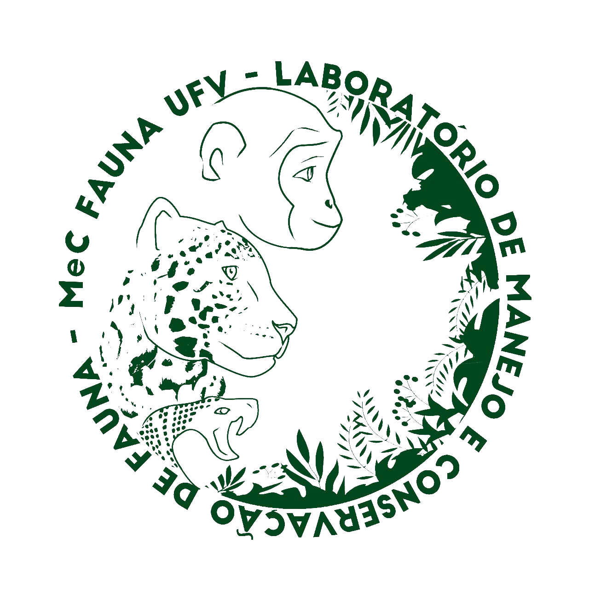
MeC Fauna Lab - Laboratório de Manejo e Conservação de Fauna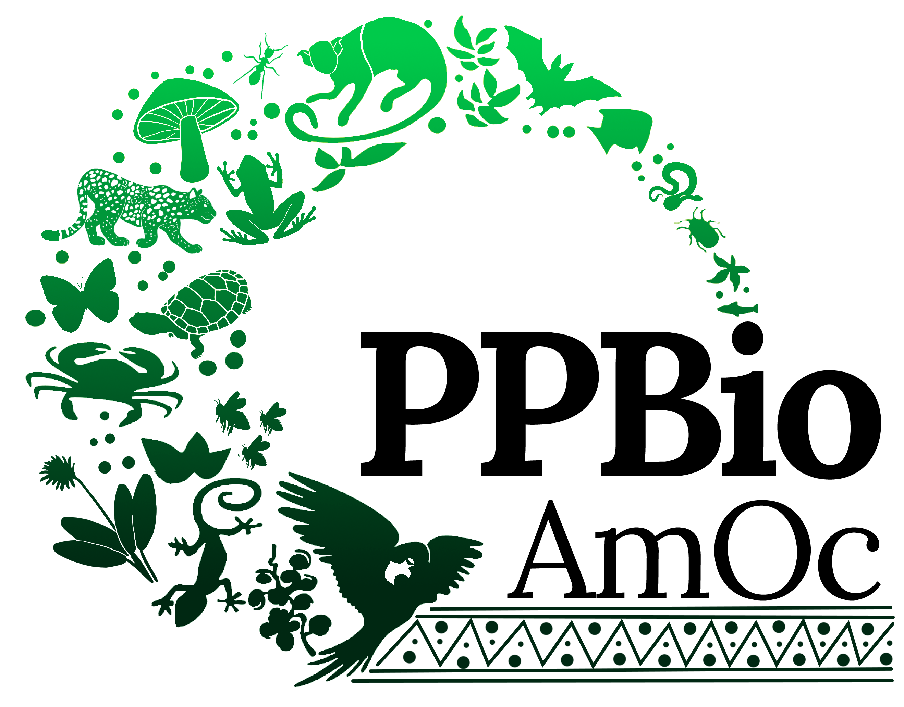
PPBio Amazônia Ocidental (PPBio Amoc) e INCT CENBAM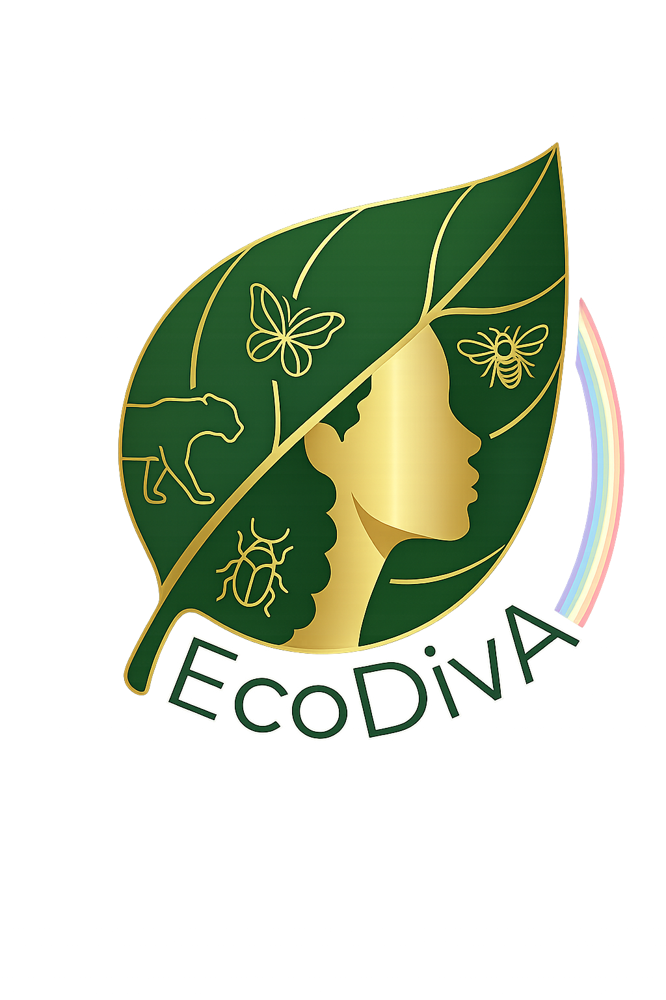
Laboratório de Ecologia e Diversidade da Amazônia (EcoDivA)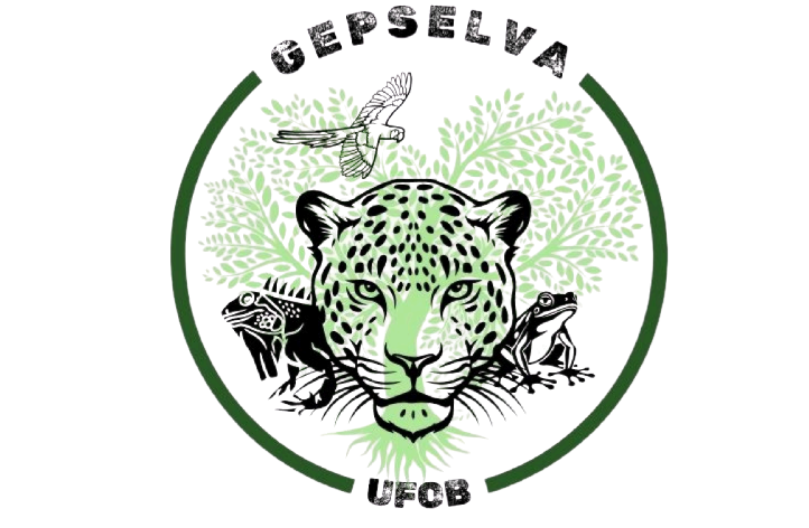
GEPSELVA/UFOB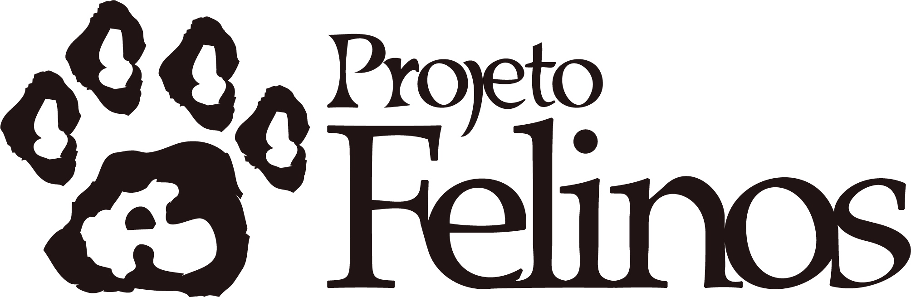
Projeto Felinos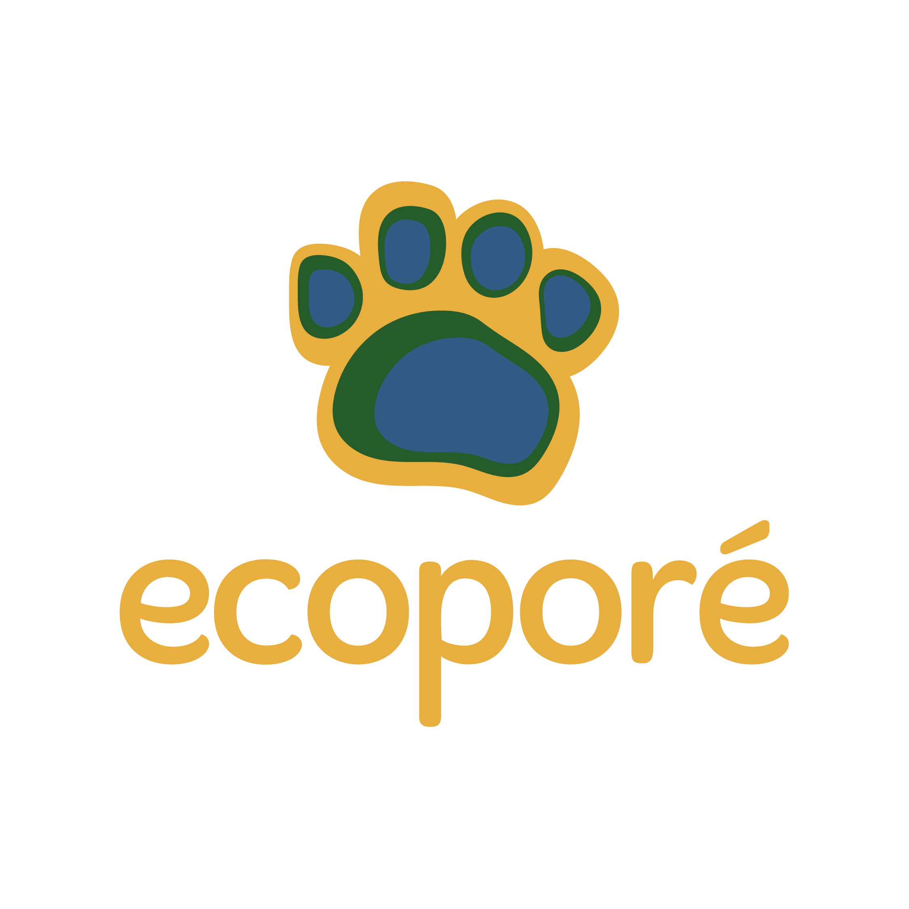
Monitoramento de biodiversidade - Ecoporé Luther Lab (George Mason University)
Luther Lab (George Mason University)
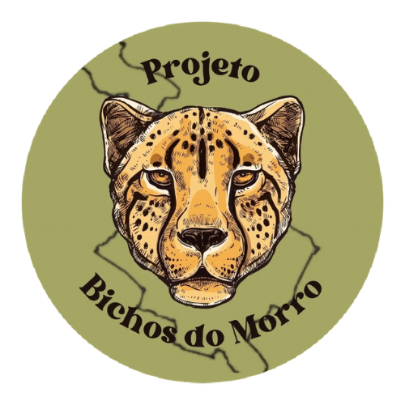
Projeto Bichos do Morro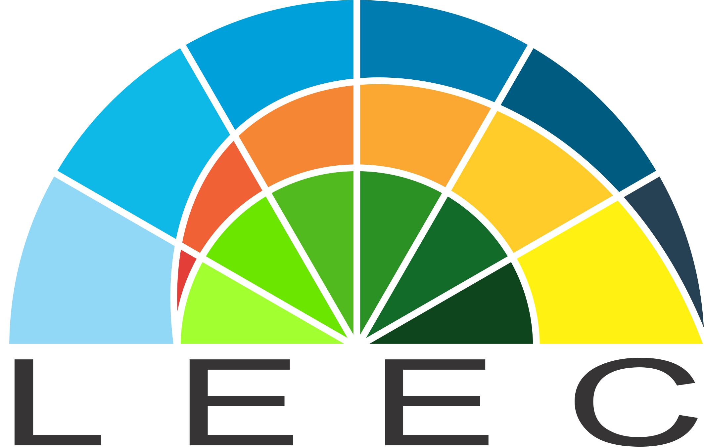
LEEC - Laboratório de Ecologia Espacial e Conservação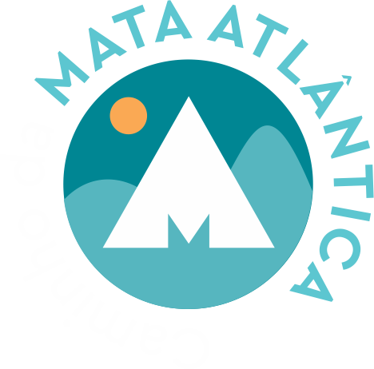
Instituto Caminho da Mata Atlântica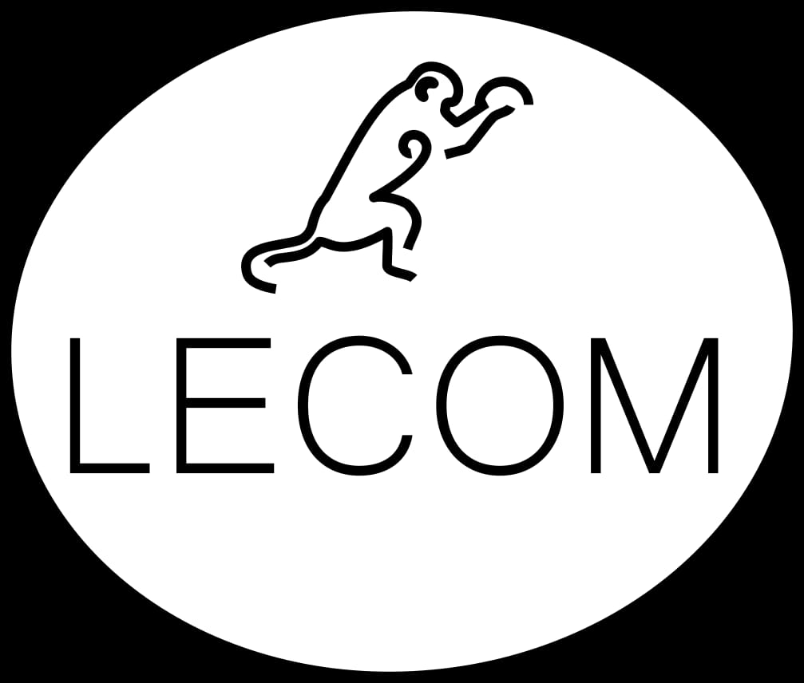
Laboratório de Ecologia e Conservação de Mamíferos - Universidade Estadual de Montes Claros Wofford Environmental Studies Department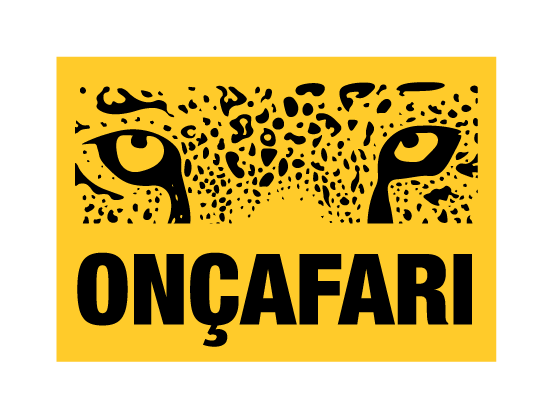
Onçafari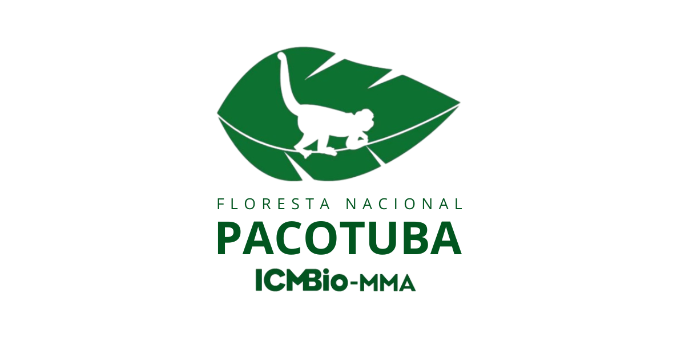
Floresta Nacional de Pacotuba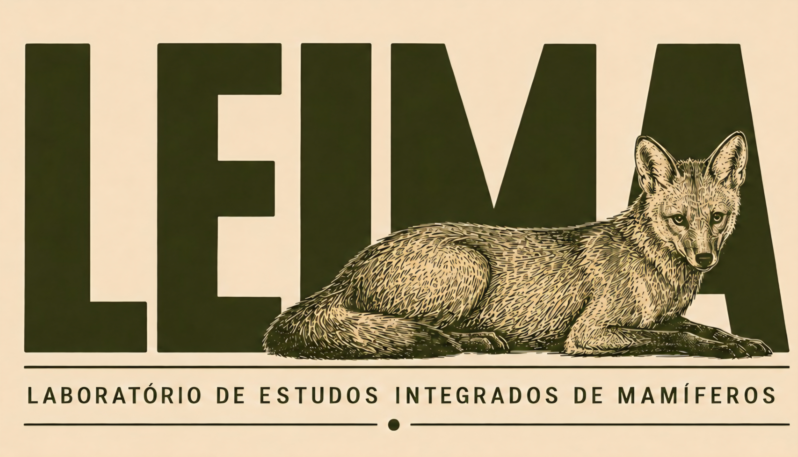
Laboratório de Estudos Integrados de Mamíferos (LEIMa)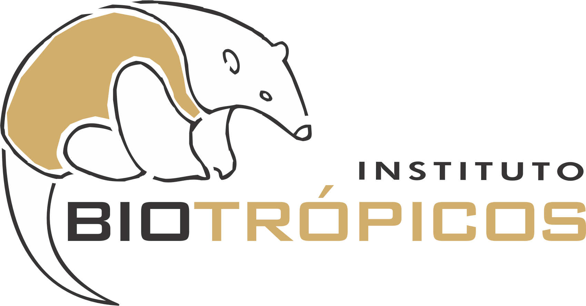
Instituto Biotrópicos - Programa de monitoramento de mamíferos no Mosaico Sertão Veredas-Peruaçu